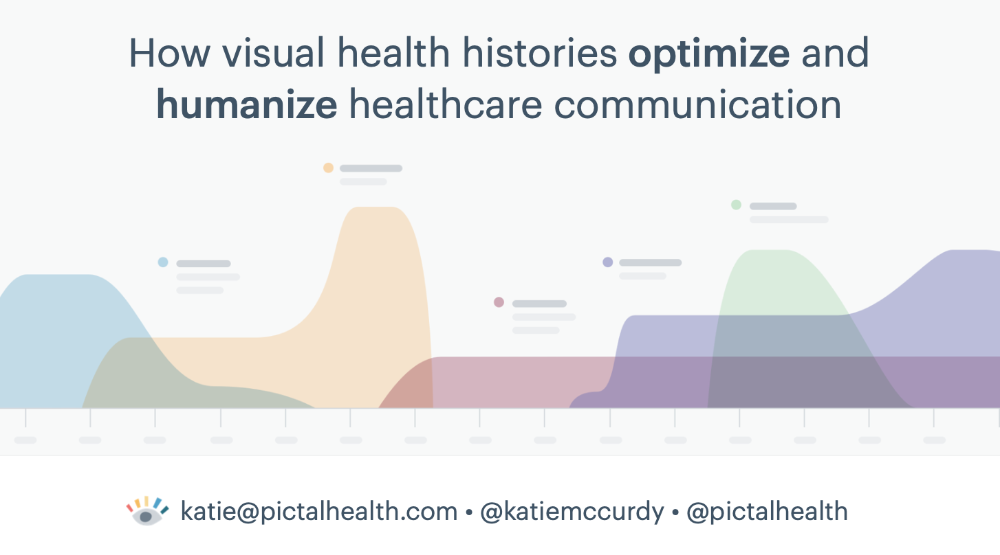
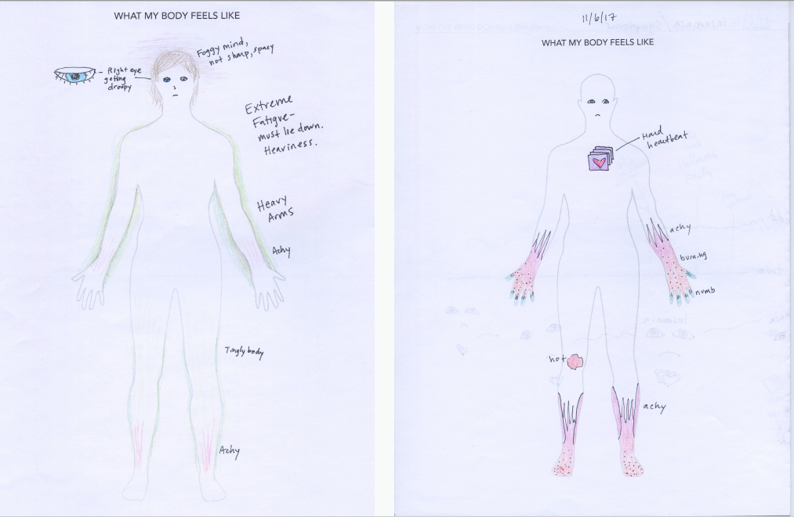
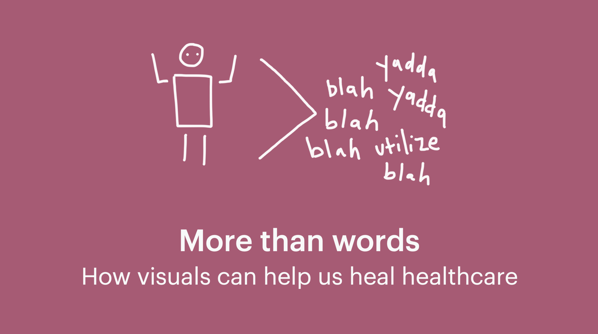
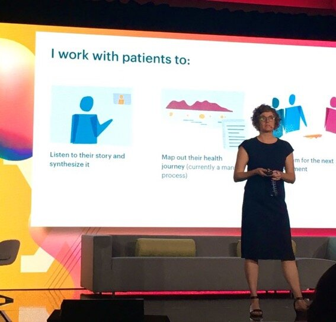
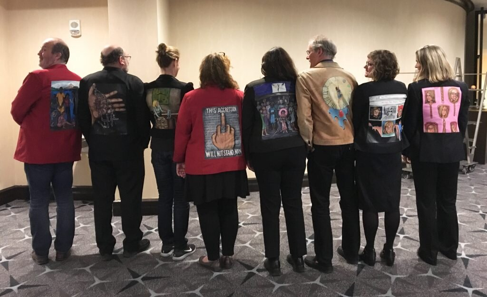

Talks
I’m an experienced public speaker and have shared my experiences on large and small
stages,
primarily at healthcare and design conferences.
How visual health histories optimize – and humanize – healthcare
communication
Design ReThinkers
, November 2021
I gave a brief summary of this topic for a design
audience, as part of a
panel of interesting women working on design + health and equity.

How visual health histories optimize – and humanize – healthcare
communication
MA Health Data Consortium
, October 2021
I reprised this session in an 1.5-hour talk in which I
share surprising insights about what I’ve learned from helping over 55 patients visualize their
health history and symptoms. I discuss the unique types of data I collect and visualize – data that
isn’t found in our health records today – and I discuss how these visuals have helped clinicians and
patients alike.

More than words: how visuals can help us heal healthcare
Cucalorus Connect
, Wilmington, NC, November 2019
The culture of healthcare is built on
words: spoken, written, and typed words. But in many cases, words don’t work. They can’t efficiently
explain bodily sensations or lifetime journeys; they can’t sufficiently show emotions or trauma. As
a result, patients and doctors often don’t understand each other, and our broken healthcare system
bumbles along. We know there’s a better way. I collaborated on this session with the awesome Dr.
Anita Ravi, founder of the PurpLE Health Foundation and comic
artist.

How visual health histories help patients feel heard, seen and believed
Medicine X CHANGE
, Palo Alto, CA September 2019
I had the pleasure of speaking again
at the Medicine X CHANGE event in the fall of 2019. I shared case studies and insights from my work
helping patients visualize their health histories.

How visual health histories optimize – and humanize – healthcare
communication
Health Datapalooza
, Washington, DC, March 2019
One major barrier to communication in doctor visits is that it’s hard to tell and understand complex
stories in rushed, 15-minute appointments. As a result many patients aren’t getting the right
diagnosis and treatment, and doctors are burning out. Visualizing data – both medical record data
and other key aspects of a patient’s story – can help patients and doctors communicate better and
work together more efficiently. In this talk I shared how health history timelines have helped me
and other patients collaborate better with our doctors, and I illustrated how visualizing our health
can revolutionize our healthcare system.

Here’s me with a bunch of other walking gallery members at the event